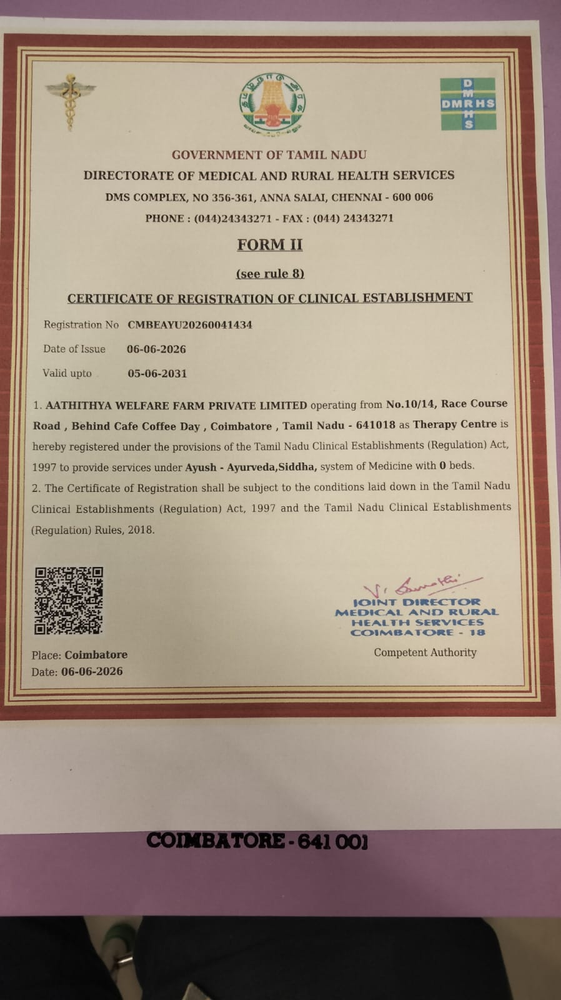

AN IMPORTANT MESSAGE FOR KALIKKAM PUBLIC AWARENESS



AATHITHYA WELFARE FARM
Traditional Siddha & Ayurveda Wellness Centre
Healing the Body • Calming the Mind • Rejuvenating Life
AN IMPORTANT MESSAGE FOR PUBLIC AWARENESS
Kalikkam – A Traditional Siddha Ophthalmic Preparation
Aathithya Welfare Farm is pleased to create awareness among the public about Kalikkam, a traditional external ophthalmic preparation described in the Siddha System of Medicine.
Kalikkam has a significant place in the traditional Siddha approach to eye care. Classical Siddha literature describes several forms of Kalikkam and their methods of preparation and application. A recent academic review has brought together and documented this traditional knowledge for wider understanding and future clinical research.
Aathithya Welfare Farm – Clinical Establishment Registration
Aathithya Welfare Farm Private Limited, Coimbatore, has received its Certificate of Registration of Clinical Establishment from the:
Government of Tamil Nadu
Directorate of Medical and Rural Health Services
The certificate records Aathithya Welfare Farm Private Limited as a Therapy Centre providing services under AYUSH – Ayurveda and Siddha systems of medicine, with 0 beds, under the provisions of the Tamil Nadu Clinical Establishments (Regulation) Act, 1997 and the Tamil Nadu Clinical Establishments (Regulation) Rules, 2018.
Registration No.: CMBEAYU20260041434
Date of Issue: 06-06-2026
Valid up to: 05-06-2031
Place: Coimbatore
This registration reflects the Centre’s status as a registered clinical establishment and its commitment to providing services within the applicable regulatory framework.
Kalikkam – Our Commitment to Traditional Knowledge & Purity
At Aathithya Welfare Farm, the preparation of Kalikkam is undertaken with respect for the classical Siddha principles and documented traditional methods.
Our approach is guided by the academic literature review:
“Literature Review on Kalikkam (Ophthalmic Application) – Siddha System of Medicine”
Authors:
Keerthika R., Kalaiarasi C., Jelin Kethziyal D., Rajpriya R.
Journal: Journal of Chemical Health Risks
Volume 14, Issue 5, 2024
Pages: 1185–1190
ISSN: 2251-6727
The review examines Kalikkam preparations described in Siddha literature, including their ingredients, preparation methods, dosage forms, application methods and traditional therapeutic significance. The authors note that Kalikkam is one of the external forms of Siddha medicine applied to the eyes. (JCHR)
Read the published research paper – Journal of Chemical Health Risks
Why This Information Matters
The purpose of sharing this information is public awareness and education.
Traditional medicines, particularly preparations intended for application to the eyes, require careful attention to the identity and quality of ingredients, preparation procedures, hygiene, storage and appropriate method of application.
By referring to documented Siddha literature and published academic work, Aathithya Welfare Farm seeks to preserve the authenticity of this traditional knowledge while promoting responsible, informed and safe use.
A Tradition Supported by Documentation
Kalikkam represents an important example of the Siddha system’s rich heritage of non-invasive external therapeutic practices.
The 2024 review specifically documents the traditional knowledge surrounding Kalikkam and highlights the need for further clinical research and ophthalmic practice-related studies. (JCHR)
Our endeavour at Aathithya Welfare Farm is therefore not merely to continue a traditional practice, but to encourage greater public understanding of its classical basis, preparation discipline and significance within Siddha medicine.
For the Welfare of the Public
We believe that awareness creates trust, and responsible practice preserves tradition.
Aathithya Welfare Farm is committed to promoting traditional Siddha and Ayurveda knowledge in a manner that respects classical references, scientific documentation, quality consciousness and public welfare.
Kalikkam is a traditional Siddha ophthalmic preparation and should be used only under appropriate professional guidance. It should not be self-prepared or self-administered, and persistent or serious eye symptoms require evaluation by a qualified eye-care professional.
Aathithya Welfare Farm Private Limited
Race Course Road, Coimbatore – 641018
Registered Clinical Establishment – Government of Tamil Nadu
Preserving Traditional Wisdom • Promoting Responsible Practice • Serving Public Welfare
Back to Kalikkam Page